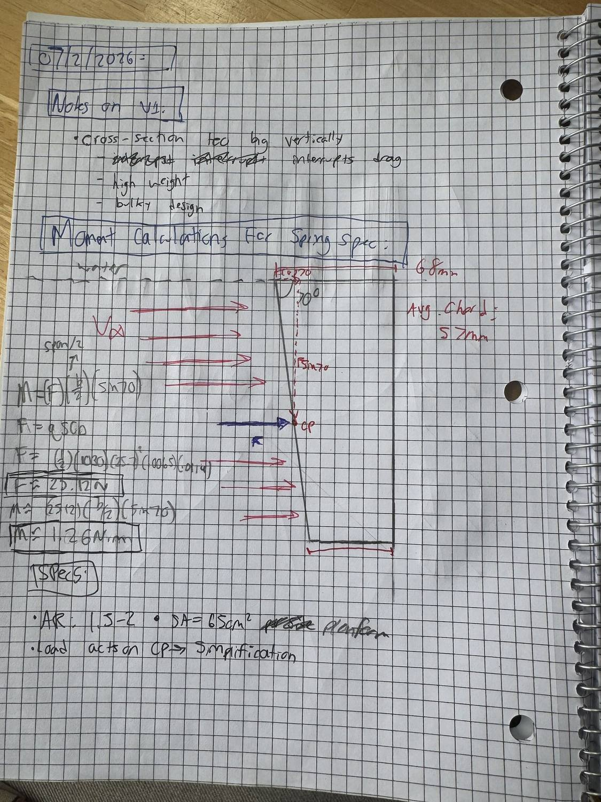
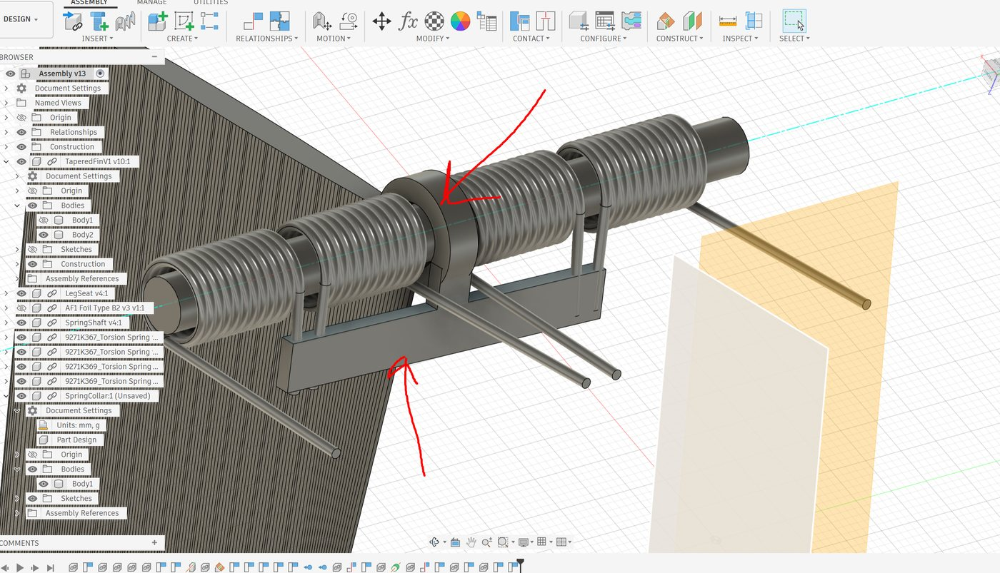
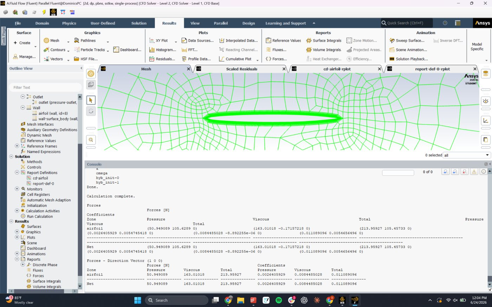

Retractable Keel Fin
Mechanical Engineering Internship — Levanta Technologies · Summer 2026

Final twin-fin design and kick-up demo
Overview
During my internship at Levanta Technologies, I designed a passive retractable keel fin for an autonomous maritime drone. The fin acts as a rigid yaw stabilizer at speed, but folds out of the way when the vehicle drives onto its recovery platform. Over the summer I:
- Developed the mechanism concept and load-path architecture
- Ran hand calculations and 2D/3D CFD in ANSYS Fluent to size the loads
- Sized the torsion springs using Shigley's method
- Designed the parts in Fusion 360 and built working printed prototypes
- Iterated through a design review and two redesigns to the final twin-fin configuration
Goals & Requirements
- Fully passive — no electronics, motors, or actuators
- Must not retract under normal water load at up to 50 knots
- Must retract when hitting the recovery platform
- Separate the drag force from the lateral stability force
- Corrosion-resistant, and durable for long deployments in salt water
- Keep the specified NACA 16-006 airfoil and composite manufacturability
Design
The requirements conflict — rigid under one load, compliant under another. The architecture that resolves it: the blade pivots on a spanwise hinge, so the large lateral force (roughly 35× the drag) passes through the hinge pin as shear and creates no moment about the pivot. Only drag tries to fold the fin, so the torsion springs only need to resist the much smaller drag moment.

Hinge-moment hand calculation

Matched LH/RH torsion springs flanking the keyed collar
I first estimated the drag with a conservative assumed Cd of 0.10, giving ~220 N. To replace the guess, I ran a 2D simulation of the airfoil in ANSYS Fluent: NACA 16-006 at a 57 mm chord in seawater at 25.7 m/s (Re ≈ 1.4×106), k-ω SST, with the wall resolved to y+ = 1.58. The result — Cd = 0.0111, 214 N per meter of span, 76% viscous — showed the hand estimate was ~9× conservative. The real hinge moment is about 1.3 N·m instead of 12, which is the difference between a spring that packages into the hinge and one that doesn't. As a sanity check, flat-plate skin-friction theory predicts a friction coefficient of 0.0087 versus the CFD's 0.0086 — a 2% match.

2D mesh in Fluent; converged force report: Cd = 0.0111, 76% viscous
The springs are a matched left/right torsion pair sized with Shigley's method, set at their free angle when deployed so they hold zero preload at rest and wind up through the 80° fold. The catalog springs used in the prototypes are ~6× too weak for flight — the real part is a custom-wound 302/304 stainless pair (I ruled out 17-7 PH after checking its chloride stress-corrosion behavior).

{kind=link}
{kind=link}
{kind=link}
{kind=link}
The design went through three major iterations. A v2 prototype fractured at the blade root along a print-layer plane, which drove a reprint orientation change and a fillet at the neck that the final metal part keeps. After a design review, I split the single blade into two smaller fins — same total area, lower stress per blade, added redundancy — and removed all flow-disrupting features, including the crossbar, by bending the spring legs directly into the shaft.
Outcomes
- Working twin-fin prototype demonstrating the full fold–deploy–reset cycle
- Validated 2D CFD case (Cd = 0.0111, y+ = 1.58) and a 3D case with a documented fix list
- Spring specification and procurement path for the custom-wound pair
- Full design package handed off at internship end: parametric CAD, CFD cases, and calcs
Scope note: kinematics were proven on the bench; the design was handed off before vehicle integration or on-water testing.
The composites side of the same internship: Composites Manufacturing.